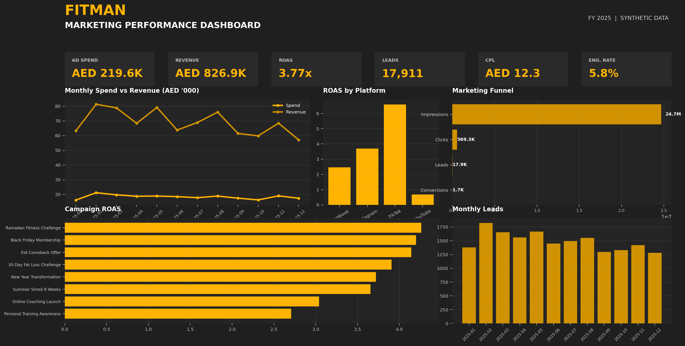

From digital marketing to data analytics, I combine commercial thinking with a data-driven mindset.
I turn raw business data into clear insights, practical reports, and decisions that help businesses understand what's working — and what to do next.
I started my career in digital marketing, working on content, campaigns, and growth for businesses in competitive markets. That experience taught me how to think commercially — understand audiences, measure performance, and connect numbers to real business outcomes.
I later moved deeper into data, working with reporting, Excel, and business data to turn raw information into something teams can actually use. Along the way, I've worked on 45+ freelance projects for a range of clients, building experience across marketing, reporting, and data analysis.
Today, I'm focused on combining commercial thinking with analytics — using Excel, SQL, and Power BI to uncover insights, build clear reports, and support better business decisions.
The instruments I reach for most, from spreadsheet-level reporting to full analytics pipelines.
Each project below, catalogued the way I'd catalogue anything worth keeping — what it was, what I used, what came of it.
Built an Excel-based reporting system from scratch to track vehicles and returned units at the Main Warehouse for Vehicle Returns No. 2, replacing ad-hoc record-keeping with structured, queryable data.

Managed digital marketing and reporting for Fitman, a UAE-based fitness brand, via Mostaql — running campaigns, tracking growth, and coordinating brand partnerships.
Nine months remote on Freelancer.com's Global Fleet workspace, annotating and validating datasets for AI/ML systems and running quality review and content evaluation against strict guidelines.
Based in Egypt, open to relocating within the country.